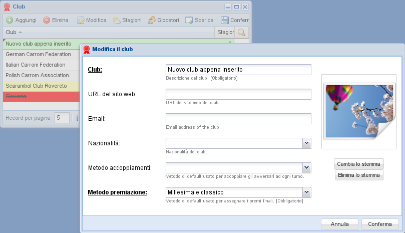

Inserimento, cancellazione e modifica¶

Modifica di un record¶
Nelle prime posizioni del menu in alto a sinistra ci sono dei pulsanti:
- Aggiungi
Aggiunge un nuovo record, aprendo una maschera di inserimento
- Elimina
Elimina il record selezionato
- Modifica
Apre la maschera di modifica del record selezionato
È possibile modificare un record anche con un doppio clic sul record stesso.
La modifica delle informazioni avviene in una ulteriore finestra che elenca solo i campi effettivamente modificabili: la maschera ha in basso due pulsanti Annulla e Conferma e quest'ultimo viene attivato solo quando le modifiche apportate siano considerate valide.
Tutte queste operazioni non vengono scritte immediatamente nel database: la griglia mostra i record modificati con uno sfondo giallo, quelli appena inseriti in verde e quelli cancellati in rosso. Un piccolo triangolo rosso nell'angolo in alto a sinistra evidenzia i campi modificati. A questo punto le due voci nel menu in alto a destra Conferma e Ripristina vengono abilitati e consentono rispettivamente di confermare le modifiche apportate oppure di annullarle e ripristinare il valore precedente, rileggendo i record dal database.
Avvertimento
Attenzione che anche semplicemente aggiornando la griglia o cambiando pagina visualizzata con la barra di navigazione annullerà le modifiche apportate e non ancora confermate!